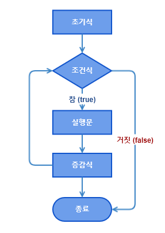

반복문 (iteration statements)
반복문은 어떤 작업이 반복적으로 수행되도록 할 때 사용되며 프로그램 내에서 똑같은 명령을 일정 횟수만큼 반복하여 수행하도록 제어하는 명령문입니다.
프로그램이 처리하는 대부분의 코드는 반복적인 형태가 많으므로, 가장 많이 사용되는 제어문 중 하나입니다.
자바에서 사용되는 대표적인 반복문의 형태는 다음과 같습니다.
- for 문
- Enhanced for 문
- while 문
- do-while 문
for 문
for문은 반복할 횟수를 정확히 알 수 있을 경우 적합합니다. 구조가 복잡하게 보이지만 직관적인 구조라 이해하기 쉽습니다. for문은 초기화, 조건식, 증감식, 블럭{} 4부분으로 이루어져있으며 실행의 순서는 다음과 같습니다.
Syntax
for (초기식; 조건식; 증감식) {
// 조건식의 결과가 참인 동안 반복적으로 수행할 문장
}- 초기식 : 반복문에 사용될 변수를 초기화하는 부분이며 처음에 한번만 수행됩니다.
- 조건식 : 조건식이 참(true)일 경우 반복을 계속하고 거짓(false)이면 반복을 중단합니다.
- 증감식 : 반복문을 제어하는 변수의 값을 증가 또는 감소시키는 식입니다.
- 블럭{} : 반복을 하는동안 실행될 문장입니다.
for문 순서도
초기식
초기식은 반복문에 사용될 변수를 초기화하는 부분이며 처음 한번만 수행됩니다. 보통 변수 하나로 for문을 제어하지만, 둘 이상의 변수가 필요한 때는 아래와 같이 콤마(,)를 구분자로 변수를 초기화하면 됩니다. (단, 변수의 타입은 같아야 합니다.)
// 변수 i의 값을 1로 초기화합니다.
for (int i = 1; i < 10; i++) { ... }
// int 타입의 변수 i를 1로 j를 0으로 각각 선언하고 초기화합니다.
for (int i = 1, j = 0; i < 10; i++) { ... }조건식
조건식의 값이 참(true)이면 반복을 계속하고, 거짓(false)이면 반복을 중단하고 for문을 벗어납니다. 즉, 조건식이 참(true)인 동안 반복을 계속합니다. 조건식을 잘못 작성하면 블럭({})내의 문장이 한 번도 수행되지 않거나 영원히 반복되는 무한반복에 빠지므로 주의해야 합니다.
// 조건식 i가 10보다 작거나 같을 경우 블럭{}안의 문장을 반복
for (int i = 1; i <= 10; i++) { ... }증감식
증감식은 반복문을 제어하는 변수의 값을 증가 또는 감소시키는 식입니다. 매 반복마다 변수의 값이 증감식에 의해서 점진적으로 변하다가 결국 조건식이 거짓이 되어 for문을 벗어나게 됩니다. 증감식도 콤마(,)를 이용해서 두 문장 이상을 하나로 연결해서 쓸 수 있습니다.
// i가 1부터 1씩 증가합니다.
for (int i = 1; i <= 10; i++) { ... }
// i가 1부터 1씩 감소합니다.
for (int i = 1; i <= 10; i--) { ... }
// i가 1부터 2씩 증가합니다.
for (int i = 1; i <= 10; i+=2) { ... }
// i가 1부터 3배씩 증가합니다.
for (int i = 1; i <= 10; i*=3) { ... }
// i를 1부터 1씩 증가하고 j를 10부터 1씩 감소합니다.
for (int i = 1, j = 10; i <= 10; i++, j--) { ... }위의 초기식, 조건식, 증감식은 각각 생략이 가능합니다. 조건식이 생략된 경우 항상 참(true)가 되어 for문은 무한반복을 하게됩니다. 이 때 블럭{} 안에 조건식을 넣어 무한반복을 빠져나오게 할 수 있습니다.
// 초기화, 조건식, 증감식 모두 생략이 가능합니다. 조건식은 참(true)이 됩니다.
for (;;) { ... }중첩 for문
for문도 if문과 마찬가지로 for문안에 또 다른 for문을 포함시키는 것이 가능합니다. 이러한 중첩 for문은 횟수의 제한이 거의 없습니다. 다음의 예제는 구구단을 2단부터 9단까지 출력하는 예제입니다.
Example
public class MultiplicationTableEx {
public static void main(String[] args) {
for (int i = 2; i <=9; i++) {
for (int j = 1; j <=9; j++) {
System.out.printf("%d x %d = %d%n", i, j, i * j);
}
}
}
}향상된 for문
JDK 1.5부터 배열과 컬렉션에 저장된 요소에 접근할 때 기존보다 편리한 방법으로 처리할 수 있도록 for문의 새로운 문법이 추가되었습니다.
Syntax
for (타입 변수명 : 배열 또는 컬렉션) {
// 반복할 문장
}- 타입 변수명 : 배열 또는 컬렌셕의 요소 타입의 변수
- 배열 또는 컬렉션 : 반복해서 값을 읽을 배열 또는 컬렉션
- 블럭{} : 반복 수행할 문장
변수명의 타입은 배열 또는 컬렉션의 요소의 타입이어야 합니다. 배열 또는 컬렉션에 저장된 값이 매 반복마다 하나씩 순서대로 읽혀서 변수에 저장됩니다. 그리고 반복문의 블럭{}내에서는 이 변수를 사용해서 코드를 작성합니다.